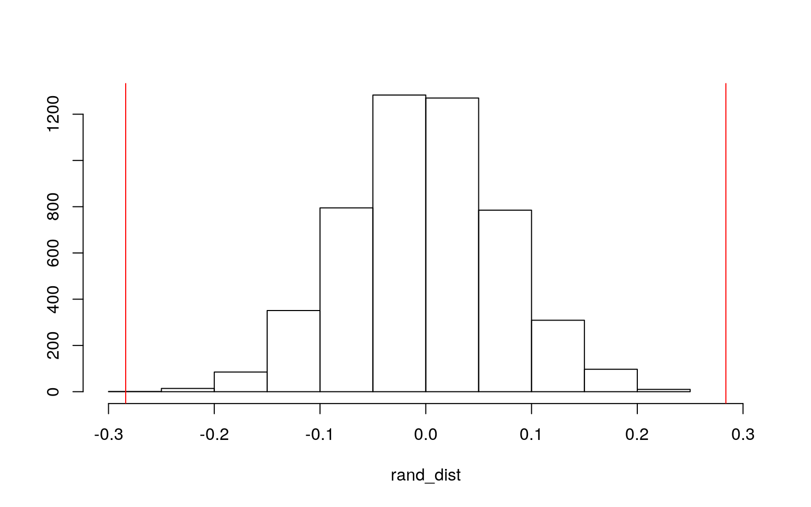

After spending too much time researching admission statistics for various medical schools, I decided to use my time more wisely by exploring a medical school acceptance dataset for my next project. The dataset is titled "MedGPA", and includes information on 55 medical school applicants from a Midwest liberal arts college. The dataset includes 12 variables. Acceptance status is displayed both through letters (A for accepted and D for denied) and through binary (1 for accepted and 0 for denied). MCAT score is included based on the old MCAT scoring system, and each MCAT subscore is also included (Verbal Reasoning, Phyiscal Sciences, Writing Sample, and Biological Sciences). GPA and Science GPA (BCPM Bio/Chem/Physics/Math GPA) were also included, as well as sex, number of medical schools applied to (Apps), and applicant number. Since the dataset was missing the MCAT Writing Sample susbscore for applicant #54, this applicant was removed from the dataset. Now the dataset contains 54 observations.
library(tidyverse)
MedGPA <- read_csv("MedGPA.csv")
MedGPA <- MedGPA %>% rename(Applicant = X1)
MedGPA <- MedGPA[-54, ]
MedGPA## # A tibble: 54 x 12
## Applicant Accept Acceptance Sex BCPM GPA VR PS WS BS MCAT
## <dbl> <chr> <dbl> <chr> <dbl> <dbl> <dbl> <dbl> <dbl> <dbl> <dbl>
## 1 1 D 0 F 3.59 3.62 11 9 9 9 38
## 2 2 A 1 M 3.75 3.84 12 13 8 12 45
## 3 3 A 1 F 3.24 3.23 9 10 5 9 33
## 4 4 A 1 F 3.74 3.69 12 11 7 10 40
## 5 5 A 1 F 3.53 3.38 9 11 4 11 35
## 6 6 A 1 M 3.59 3.72 10 9 7 10 36
## 7 7 A 1 M 3.85 3.89 11 12 6 11 40
## 8 8 D 0 M 3.26 3.34 11 11 8 9 39
## 9 9 A 1 F 3.74 3.71 8 10 6 11 35
## 10 10 A 1 F 3.86 3.89 9 9 6 10 34
## # … with 44 more rows, and 1 more variable: Apps <dbl>library(rstatix)
group <- MedGPA$Accept
DVs <- MedGPA %>% select(GPA, BCPM, MCAT, Apps)
sapply(split(DVs, group), mshapiro_test)## A D
## statistic 0.9533242 0.8701898
## p.value 0.2073555 0.005305916In order to perform a MANOVA, the data was tested to see if MANOVA assumptions were met. The multivariate normality for each group was tested using the Shapiro-Wilk test. For the subset of people who were accepted, the p-value from the test was 0.2073555. For the group of people who were denied admission, the p-value was 0.005305916, which means the null hypothesis is rejected and the multivariate normality assumption was violated. After testing the assumptions, the MANOVA was carried out testing if GPA, science GPA, MCAT score, and number of applications sent out experienced a mean difference based on whether an applicant was accepted or not.
manMedGPA <- manova(cbind(GPA, BCPM, MCAT, Apps) ~ Accept, data = MedGPA)
summary(manMedGPA)## Df Pillai approx F num Df den Df Pr(>F)
## Accept 1 0.31646 5.6713 4 49 0.0007833 ***
## Residuals 52
## ---
## Signif. codes: 0 '***' 0.001 '**' 0.01 '*' 0.05 '.' 0.1 ' ' 1The MANOVA resulted in a P-value of 0.0007833, suggesting that at least one of the numeric variables shows a mean difference based on admission status. To determine which numeric variables showed a mean difference based on admission status, four univariate ANOVAs were performed.
summary.aov(manMedGPA)## Response GPA :
## Df Sum Sq Mean Sq F value Pr(>F)
## Accept 1 1.0735 1.07352 20.083 4.101e-05 ***
## Residuals 52 2.7796 0.05345
## ---
## Signif. codes: 0 '***' 0.001 '**' 0.01 '*' 0.05 '.' 0.1 ' ' 1
##
## Response BCPM :
## Df Sum Sq Mean Sq F value Pr(>F)
## Accept 1 1.3925 1.39249 16.403 0.0001712 ***
## Residuals 52 4.4144 0.08489
## ---
## Signif. codes: 0 '***' 0.001 '**' 0.01 '*' 0.05 '.' 0.1 ' ' 1
##
## Response MCAT :
## Df Sum Sq Mean Sq F value Pr(>F)
## Accept 1 143.01 143.008 9.6599 0.003051 **
## Residuals 52 769.83 14.804
## ---
## Signif. codes: 0 '***' 0.001 '**' 0.01 '*' 0.05 '.' 0.1 ' ' 1
##
## Response Apps :
## Df Sum Sq Mean Sq F value Pr(>F)
## Accept 1 5.07 5.0704 0.2186 0.642
## Residuals 52 1205.97 23.1917The p-value for the ANOVA that tested the mean difference for number of applications submitted based on admission status was 0.642, and is evidence that the mean difference in number of applications submitted based on admission status is insignificant. For GPA (4.101e-05), BCPM (0.0001712), and MCAT (0.003051), the mean difference p-values were all significant. This is evidence that the mean difference for each of these factors is significant based on admission status. Since there were only two acceptance statuses there was no need to perform any post-hoc t-tests.
1 - 0.95^5## [1] 0.22621910.05/5## [1] 0.01One MANOVA and four univariate ANOVAS tests were performed, for a total of 5 tests. This means that the probability of at least one type-I error occuring is 1-0.95^5 = 0.2262191. The Bonferroni correction was applied to get a new significance value 0.05/5=0.01. This adjustment did not result in any different conclusions based on significance compared to the original conclusions that were made.
rand_dist <- vector()
for (i in 1:5000) {
new <- data.frame(GPA = sample(MedGPA$GPA), Accept = MedGPA$Accept)
rand_dist[i] <- mean(new[new$Accept == "D", ]$GPA) - mean(new[new$Accept ==
"A", ]$GPA)
}
MedGPA %>% group_by(Accept) %>% summarize(means = mean(GPA)) %>%
summarize(mean_diff = diff(means))## # A tibble: 1 x 1
## mean_diff
## <dbl>
## 1 -0.284mean(rand_dist > 0.28375 | rand_dist < -0.28375)## [1] 0{
hist(rand_dist, main = "", ylab = "", xlim = c(-0.3, 0.3))
abline(v = c(-0.28375, 0.28375), col = "red")
} A randomization test was performed to determine the mean difference in GPA based on admissions status, and to determine if this difference was significant. The null hypothesis was that the mean difference in GPA based on admission status was 0, and the alternative hypothesis was that the mean difference was not 0. The relationships between the variables were scrambled by randomizing the columns and generating a null distribution to compare against an observed test statistic. The mean difference subtracting admitted applicant GPAs from denied applicant GPAs was calculated to be -0.28375, and the calculated p-value was extremely small (2e-04), which means that the null hypothesis was rejected and the mean difference in GPA based on admission status was significant. A histogram was generated showing how far out the actual difference in mean GPA was from the distribution.
library(sandwich)
library(lmtest)
MedGPA$GPA_c <- MedGPA$GPA - mean(MedGPA$GPA)
fit <- lm(MCAT ~ Sex * GPA_c, data = MedGPA)
summary(fit)##
## Call:
## lm(formula = MCAT ~ Sex * GPA_c, data = MedGPA)
##
## Residuals:
## Min 1Q Median 3Q Max
## -7.7483 -3.0669 -0.0158 2.1076 9.1542
##
## Coefficients:
## Estimate Std. Error t value Pr(>|t|)
## (Intercept) 36.1967 0.7155 50.589 <2e-16 ***
## SexM 0.8273 1.0310 0.802 0.4261
## GPA_c 8.6614 2.9978 2.889 0.0057 **
## SexM:GPA_c -3.0174 3.9157 -0.771 0.4446
## ---
## Signif. codes: 0 '***' 0.001 '**' 0.01 '*' 0.05 '.' 0.1 ' ' 1
##
## Residual standard error: 3.783 on 50 degrees of freedom
## Multiple R-squared: 0.2163, Adjusted R-squared: 0.1693
## F-statistic: 4.599 on 3 and 50 DF, p-value: 0.006413ggplot(MedGPA, aes(GPA, MCAT, color = Sex)) + geom_smooth(method = "lm",
se = F, fullrange = T) + geom_point()A linear regression model was create predicting the MCAT score based on sex and mean centered GPA (with interaction). Based on the regression, a female applicant with an average GPA is predicted to have an MCAT score of 36.1967. A male applicant with an average GPA is expected to score 0.8273 higher on the MCAT than a female applicant with an average GPA. Finally, the slope for GPA on MCAT score is 3.0174 less for males compared to females. The adjusted R-squared value for the fit was found to be 0.1693, meaning that 0.1693 of the variation in MCAT score is explained by the model.
resids <- fit$residuals
fitvals <- fit$fitted.values
ggplot() + geom_point(aes(fitvals, resids)) + geom_hline(yintercept = 0,
color = "red")ggplot() + geom_histogram(aes(resids), bins = 20)qqnorm(resids)
qqline(resids, col = "red")ks.test(resids, "pnorm", mean = 0, sd(resids))##
## One-sample Kolmogorov-Smirnov test
##
## data: resids
## D = 0.073236, p-value = 0.9137
## alternative hypothesis: two-sidedbptest(fit)##
## studentized Breusch-Pagan test
##
## data: fit
## BP = 2.5663, df = 3, p-value = 0.4634To check that the assumptions for a linear regression were met, a plot comparing the residuals to the fitted values was generated. This plot appeared to include data points that were generally randomly distributed, suggesting linearity. A plot with the distribution of the residuals was generated and the distribution appeared to be somewhat normal. A Q-Q plot was generated and appeared normal, and a Kolmogorov-Smirnov test was performed and resulted in a p-value of 0.9137. This p-value means we fail to reject the null hypothesis of normality in the residuals. The regression plot did not show a fanning pattern, and a Breusch-Pagan test to assess homoskedasticity resulted in a p-value of 0.4634, meaning the data was homoskedastic and the variances were equal throughout the model. All of the main assumptions for a linear regression appeared to be met.
coeftest(fit, vcov = vcovHC(fit))##
## t test of coefficients:
##
## Estimate Std. Error t value Pr(>|t|)
## (Intercept) 36.19669 0.70726 51.1785 <2e-16 ***
## SexM 0.82731 1.07337 0.7708 0.4445
## GPA_c 8.66138 3.43073 2.5246 0.0148 *
## SexM:GPA_c -3.01739 4.18204 -0.7215 0.4740
## ---
## Signif. codes: 0 '***' 0.001 '**' 0.01 '*' 0.05 '.' 0.1 ' ' 1Recomputing the regression using robust standard errors resulted in the calculation of larger standard errors for each coefficient, and larger p-values. Overall, this did not cause any significant change.
samp_distn <- replicate(5000, {
boot_dat <- MedGPA %>% sample_frac(replace = TRUE)
fit <- lm(MCAT ~ Sex * GPA_c, data = boot_dat)
coef(fit)
})
samp_distn %>% t %>% as.data.frame %>% summarize_all(sd)## (Intercept) SexM GPA_c SexM:GPA_c
## 1 0.656757 1.018496 3.270398 4.174336The regression was then rerun using bootstrapped standard errors by resampling the observations. The standard error for SexM decreased very slightly compared to the original sample, meaning the p-value likely decreased. The standard error for GPA_c and the standard error for the interaction between SexM and GPA_c increased, meaning the p-value for each of these increased.
MedGPA$MCAT_c <- MedGPA$MCAT - mean(MedGPA$MCAT)
fit <- glm(Acceptance ~ GPA_c + MCAT_c, data = MedGPA, family = "binomial")
coeftest(fit)##
## z test of coefficients:
##
## Estimate Std. Error z value Pr(>|z|)
## (Intercept) 0.33179 0.34063 0.9740 0.330036
## GPA_c 4.67359 1.64236 2.8457 0.004432 **
## MCAT_c 0.16419 0.10337 1.5883 0.112211
## ---
## Signif. codes: 0 '***' 0.001 '**' 0.01 '*' 0.05 '.' 0.1 ' ' 1exp(coef(fit))## (Intercept) GPA_c MCAT_c
## 1.393455 107.081457 1.178434A logistic regression was created predicting acceptance (a binary variable) based on mean centered GPA and mean centered MCAT score. The odds of acceptance for someone with an average GPA and MCAT score are 1.393455. Controlling for MCAT score, a GPA increase of 1 increases the odds of acceptance by a factor of 107.08, which is a significant difference. Controlling for GPA, an MCAT score increase of 1 increases the odds of acceptance by a factor of 1.18, which is not a significant difference.
MedGPA$prob <- predict(fit, type = "response")
MedGPA$predicted <- ifelse(MedGPA$prob > 0.5, "A", "D")
table(truth = MedGPA$Accept, prediction = MedGPA$predicted) %>%
addmargins## prediction
## truth A D Sum
## A 23 7 30
## D 7 17 24
## Sum 30 24 54prob <- predict(fit, type = "response")
class_diag(prob, MedGPA$Acceptance)## acc sens spec ppv f1 auc
## 1 0.7407407 0.7666667 0.7083333 0.7666667 0.7666667 0.8277778library(plotROC)
ROCplot <- ggplot(MedGPA) + geom_roc(aes(d = Acceptance, m = GPA_c +
MCAT_c, A = 1), n.cuts = 0)
ROCplotcalc_auc(ROCplot)## PANEL group AUC
## 1 1 -1 0.7472222A confusion matrix was generated for the logistic regression by comparing the true acceptances to the acceptances that were predicted by the model. The accuracy (proportion of correctly predicted cases) of the model was calculated to be 0.7407407, the sensitivity (proportion of correctly predicted acceptances) was calculated to be 0.7666667, the specificity (proportion of correctly predicted rejections) was 0.7083333, the precision (proportion of predicted acceptances who were actualy accepted) was 0.7666667, and the auc was 0.8277778. Next a ROC curve was generated and the auc (area under the curve) was calculated to be 0.7472222, suggesting that the model is a fair fit for the data.
MedGPA$logit <- predict(fit)
MedGPA %>% mutate(Accept = factor(Accept, levels = c("D", "A"))) %>%
ggplot(aes(logit, fill = Accept)) + geom_density(alpha = 0.5) +
geom_vline(xintercept = 0, lty = 2)The logit scores were plotted for the two acceptance statuses to visualize the data that was classified correctly compared to what was misclassified.
fit <- glm(Acceptance ~ GPA + Sex + BCPM + Apps + BS + PS + WS +
VR, data = MedGPA, family = "binomial")
coeftest(fit)##
## z test of coefficients:
##
## Estimate Std. Error z value Pr(>|z|)
## (Intercept) -46.641392 15.599671 -2.9899 0.002791 **
## GPA 12.397279 8.610710 1.4398 0.149938
## SexM -2.283542 1.429461 -1.5975 0.110158
## BCPM -6.163325 6.963006 -0.8852 0.376074
## Apps 0.051198 0.147234 0.3477 0.728038
## BS 1.918392 0.681825 2.8136 0.004899 **
## PS 1.167257 0.539463 2.1637 0.030484 *
## WS -0.778431 0.395588 -1.9678 0.049093 *
## VR 0.079037 0.310589 0.2545 0.799129
## ---
## Signif. codes: 0 '***' 0.001 '**' 0.01 '*' 0.05 '.' 0.1 ' ' 1MedGPA$prob <- predict(fit, type = "response")
MedGPA$predicted <- ifelse(MedGPA$prob > 0.5, "A", "D")
table(truth = MedGPA$Accept, prediction = MedGPA$predicted) %>%
addmargins## prediction
## truth A D Sum
## A 27 3 30
## D 3 21 24
## Sum 30 24 54prob <- predict(fit, type = "response")
class_diag(prob, MedGPA$Acceptance)## acc sens spec ppv f1 auc
## 1 0.8888889 0.9 0.875 0.9 0.9 0.95Next, a logistic regression was created predicting acceptance based on GPA, Science GPA, each of the MCAT subscores, Sex, and the number of applications submitted. A significant p-value was generated for three of the MCAT subscores, BS, PS, and WS. The accuracy of the model was calculated to be 0.8888889, the sensitivity was calculated to be 0.9, the specificity was 0.875, the precision was 0.9, and the auc was 0.95, suggesting the model was a great fit.
set.seed(1234)
k = 10
data <- MedGPA[sample(nrow(MedGPA)), ]
folds <- cut(seq(1:nrow(MedGPA)), breaks = k, labels = F)
diags <- NULL
for (i in 1:k) {
train <- data[folds != i, ]
test <- data[folds == i, ]
truth <- test$Acceptance
fit <- glm(Acceptance ~ GPA + Sex + BCPM + Apps + BS + PS +
WS + VR, data = MedGPA, family = "binomial")
probs <- predict(fit, newdata = test, type = "response")
diags <- rbind(diags, class_diag(probs, truth))
}
summarize_all(diags, mean)## acc sens spec ppv f1 auc
## 1 0.8933333 0.8916667 0.8966667 0.88 0.8712698 0.9722222A 10-fold cross validation to test how well the model performs on new data. The data was split into two parts and the model was fit to one part and tested on the other part, doing this multiple times to measure the average performance of the model. The accuracy of the model was calculated to be 0.8933333, the sensitivity was calculated to be 0.8916667, the specificity was 0.8966667, the precision was 0.88, and the auc was 0.9722222, suggesting the model was a great fit. The auc from the cross validation was slightly higher than the auc from the initial regression. The model appears to do well at making predictions on new data.
library(glmnet)
y <- as.matrix(MedGPA$Acceptance) #grab response
x <- model.matrix(Acceptance ~ ., data = MedGPA)[, -c(1, 2, 3,
13, 14, 15, 16, 17)]
cv <- cv.glmnet(x, y, family = "binomial")
lasso <- glmnet(x, y, family = "binomial", lambda = cv$lambda.1se)
coef(lasso)## 10 x 1 sparse Matrix of class "dgCMatrix"
## s0
## (Intercept) -3.9374111
## SexM .
## BCPM .
## GPA 0.6376048
## VR .
## PS .
## WS .
## BS 0.1923299
## MCAT .
## Apps .LASSO was performed on the model and the variables that were always retained were GPA and BS (the Behavioral Science subscore of the MCAT).
set.seed(1234)
k = 10
data <- MedGPA[sample(nrow(MedGPA)), ]
folds <- cut(seq(1:nrow(MedGPA)), breaks = k, labels = F)
diags <- NULL
for (i in 1:k) {
train <- data[folds != i, ]
test <- data[folds == i, ]
truth <- test$Acceptance
fit <- glm(Acceptance ~ GPA + BS, data = MedGPA, family = "binomial")
probs <- predict(fit, newdata = test, type = "response")
diags <- rbind(diags, class_diag(probs, truth))
}
summarize_all(diags, mean)## acc sens spec ppv f1 auc
## 1 0.82 0.8333333 0.7966667 0.83 0.8019841 0.8736111The 10-fold cross validation was repeated, this time using only the variables that were selected by LASSO (GPA and BS). The out-of-sample AUC was calculated to be 0.8736111, which is lower than the previous AUC calculations for the logistic models but regardless it suggests that this model is a good fit.